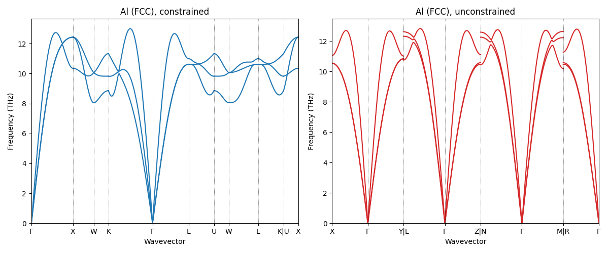
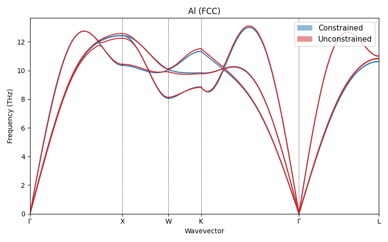
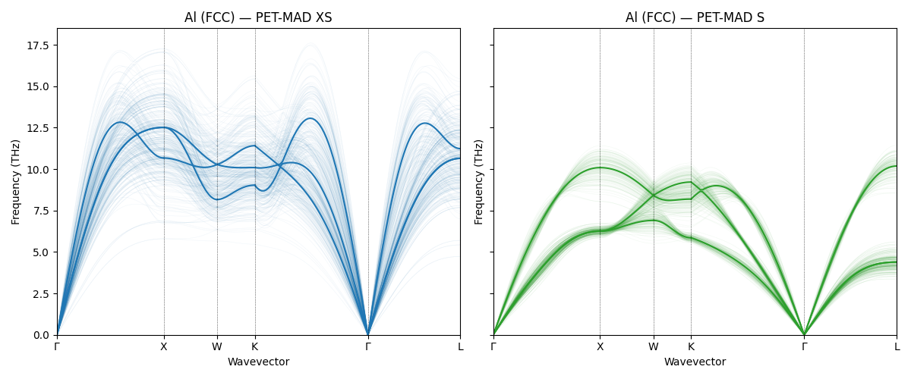
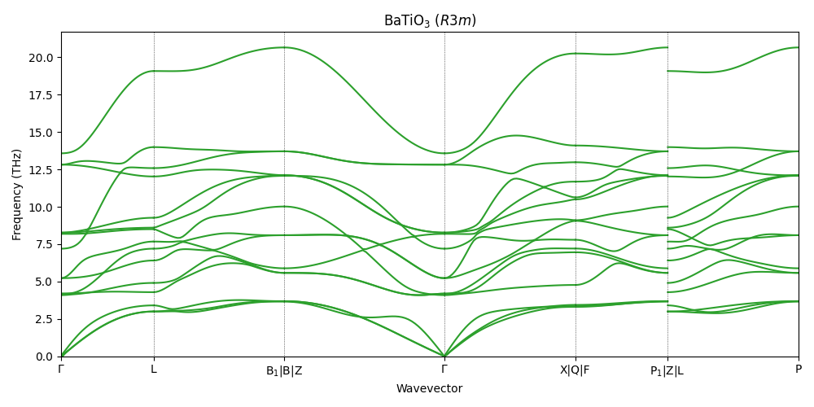
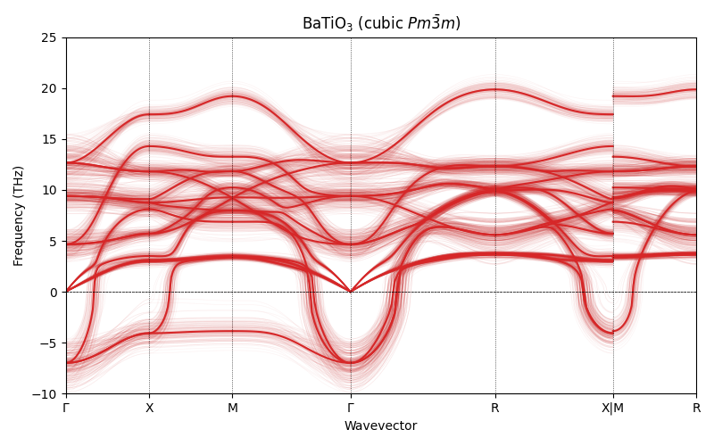
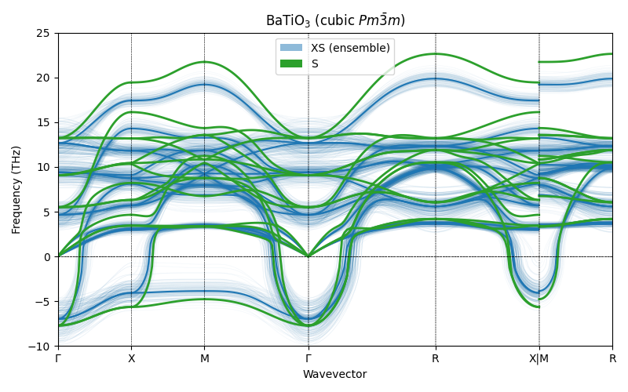

Note
Go to the end to download the full example code.
Phonon dispersions with unconstrained models and uncertainty quantification¶
Phonon dispersion curves are important experimental probes of the lattice dynamics of a material, and are commonly used to validate MLIPs. They are also crucial for computing temperature-dependent properties such as free energies and thermal conductivity.
Phonon bands are also used as a test of dynamical stability: a converged geometry optimization does not guarantee stability, as the structure may be a saddle point rather than a true minimum. A more telling test is the phonon dispersion: a stable structure has all real (positive) frequencies, while imaginary (negative) frequencies signal a dynamical instability, i.e. that a distortion of the structure (possibly accessible only for a larger cell) would lower the energy.
We consider three systems:
Al (FCC): a simple, stable metal. We show that constrained and unconstrained relaxations yield the same phonon dispersion when evaluated along the same \(\mathbf{q}\)-path—a subtlety that is important when using unconstrained models that do not fulfill exactly the symmetries of the system.
BaTiO₃ rhombohedral \(R3m\) (ferroelectric): the 0 K ground state discovered by unconstrained relaxation in the geometry relaxation recipe. All frequencies are real, confirming dynamical stability.
BaTiO₃ cubic \(Pm\bar{3}m\): the high-symmetry paraelectric structure, dynamically unstable with imaginary modes at \(\Gamma\) (ferroelectric soft mode).
This recipe also shows how to compute phonon band structures with uncertainty estimates from MLIP ensembles, using uqphonon, a wrapper around phonopy and i-PI. Uncertainty quantification is based on the construction of a shallow ensemble (cf. Kellner and Ceriotti, 2024), with the committee members obtained using the last-layer prediction rigidity framework (LLPR, Bigi et al., 2024; see also the PET-MAD UQ recipe).
import warnings
import numpy as np
import matplotlib.pyplot as plt
from matplotlib.patches import Patch
from ase import Atoms
from ase.build import bulk
from ase.constraints import FixSymmetry
from ase.filters import FrechetCellFilter
from ase.optimize import LBFGS
from pathlib import Path
import tempfile
import spglib
import upet
from upet.calculator import UPETCalculator
from phonopy import Phonopy
from phonopy.structure.atoms import PhonopyAtoms
# helper functions from uqphonon
from uqphonon import PhononEnsemble
from uqphonon._core import _phonopy_to_ase
from uqphonon._core import _resolve_bandpath
from uqphonon._plot import plot_bands
# Suppress warnings about matrix logarithm accuracy issued by scipy during geometry
# optimization to avoid cluttering the output
warnings.filterwarnings(
"ignore",
category=RuntimeWarning,
message="logm result may be inaccurate, approximate err",
)
# sphinx_gallery_thumbnail_number = 3
Setup¶
We use the extra-small (XS) variant of PET-MAD v1.5.0. For production calculations, the S model would be a more accurate choice.
FMAX = 1e-4 # eV/Å, force convergence threshold
STEPS = 500 # max optimization steps
DELTA = 0.05 # Å, displacement amplitude for force constants
DEVICE = "cpu"
MODEL_BASE = "pet-mad"
MODEL_SIZE = "xs"
MODEL_VERSION = "1.5.0"
MODEL_NAME = f"{MODEL_BASE}-{MODEL_SIZE}"
calc = UPETCalculator(
model=MODEL_NAME,
device=DEVICE,
dtype="float32",
version=MODEL_VERSION,
)
Export model¶
uqphonon drives force evaluations through i-PI, which requires a
TorchScript-exported metatomic model.
model_path = "model.pt"
upet.save_upet(
model=MODEL_BASE,
size=MODEL_SIZE,
version=MODEL_VERSION,
output=model_path,
)
print(f"Model saved to {model_path}")
Model saved to model.pt
Helpers¶
def report_symmetry(atoms, label=""):
"""Detect and report space group using spglib."""
spglib_cell = (
atoms.get_cell(),
atoms.get_scaled_positions(),
atoms.get_atomic_numbers(),
)
sg_loose = spglib.get_spacegroup(spglib_cell, symprec=1e-2)
sg_tight = spglib.get_spacegroup(spglib_cell, symprec=1e-6)
print(
f"{label:30s} loose (1e-2): {str(sg_loose):15s} tight (1e-6): {str(sg_tight)}"
)
def compute_phonons(
atoms, model_path, supercell, bands=None, npoints=50, labels=None, label=""
):
"""Compute phonon band structure with phonopy and the ASE calculator."""
print(f"\n--- {label} ---")
phonopy_atoms = PhonopyAtoms(
symbols=atoms.get_chemical_symbols(),
cell=atoms.cell[:],
scaled_positions=atoms.get_scaled_positions(),
)
phonon = Phonopy(
phonopy_atoms,
supercell_matrix=np.diag(supercell),
primitive_matrix=np.eye(3),
)
phonon.generate_displacements(distance=DELTA)
supercells = phonon.supercells_with_displacements
forces = []
for sc in supercells:
sc_ase = Atoms(
symbols=sc.symbols,
cell=sc.cell,
scaled_positions=sc.scaled_positions,
pbc=True,
)
sc_ase.calc = atoms.calc
forces.append(sc_ase.get_forces())
phonon.forces = np.array(forces)
phonon.produce_force_constants()
phonon.symmetrize_force_constants()
n_disp = len(supercells)
n_atoms = len(supercells[0])
print(f"{n_disp} displacements, {n_atoms} atoms/cell")
# Resolve the band path using the same logic as uqphonon
prim_atoms = _phonopy_to_ase(phonon.primitive)
qpoints, connections, resolved_labels = _resolve_bandpath(
prim_atoms, bands, npoints, labels=labels
)
phonon.run_band_structure(
qpoints, path_connections=connections, labels=resolved_labels
)
# Wrap in a simple namespace so that .plot() and .compute_bands() work
# like PhononEnsemble
class _PhononResult:
def __init__(self, ph):
self._phonon = ph
def plot(self, ax=None, mode="ensemble", unit="cm-1", **kwargs):
return plot_bands(
[self._phonon], self._phonon, mode=mode, unit=unit, ax=ax, **kwargs
)
def compute_bands(self, bandpath=None, npoints=151, labels=None):
qpts, conns, lbls = _resolve_bandpath(
prim_atoms, bandpath, npoints, labels=labels
)
self._phonon.run_band_structure(qpts, path_connections=conns, labels=lbls)
return _PhononResult(phonon)
def compute_phonons_with_uq(
atoms, model_path, supercell, bands=None, npoints=50, labels=None, label=""
):
"""Compute phonon band structure with uqphonon ensemble."""
print(f"\n--- {label} ---")
ensemble = PhononEnsemble(
atoms,
supercell_matrix=np.diag(supercell),
model=str(model_path),
device=DEVICE,
primitive_matrix=np.eye(3),
)
ensemble.compute_displacements(distance=DELTA)
workdir = Path(tempfile.gettempdir()) / f"uqphonon_{label.replace(' ', '_')}"
ensemble.run_forces(workdir=workdir)
n_disp, n_ens, n_atoms, _ = ensemble.forces.shape
print(f"{n_ens} ensemble members, {n_disp} displacements, {n_atoms} atoms/cell")
if bands is not None:
ensemble.compute_bands(bandpath=bands, npoints=npoints, labels=labels)
else:
ensemble.compute_bands(npoints=npoints)
return ensemble
Al (FCC)¶
FCC aluminum is dynamically stable. We use it to illustrate a subtlety that is relevant when using an unconstrained model to find the minimum energy structure and compute the phonons: as already seen in the geometry relaxation recipe, unconstrained relaxation slightly breaks the \(Fm\bar{3}m\) symmetry, which causes automatic \(\mathbf{q}\)-path finders to detect a different (lower-symmetry) path. Therefore the band structure looks different, even though the underlying physics is the same.
Constrained relaxation¶
We first relax the cell with FixSymmetry to keep it at perfect FCC symmetry.
SUPERCELL_AL = (4, 4, 4)
atoms_al_const = bulk("Al", "fcc", a=4.05)
atoms_al_const.set_constraint(FixSymmetry(atoms_al_const))
atoms_al_const.calc = calc
opt_c = LBFGS(
FrechetCellFilter(atoms_al_const, mask=[True] * 3 + [False] * 3), logfile=None
)
opt_c.run(fmax=FMAX, steps=STEPS)
report_symmetry(atoms_al_const, "Al FCC constrained")
atoms_al_const.set_constraint(None)
Al FCC constrained loose (1e-2): Fm-3m (225) tight (1e-6): Fm-3m (225)
Unconstrained relaxation¶
Because of the small symmetry breaking, unconstrained relaxation converges to a slightly distorted cell with lower symmetry.
atoms_al_unconst = bulk("Al", "fcc", a=4.05)
atoms_al_unconst.calc = calc
opt_u = LBFGS(FrechetCellFilter(atoms_al_unconst), logfile=None)
opt_u.run(fmax=FMAX, steps=STEPS)
report_symmetry(atoms_al_unconst, "Al FCC unconstrained")
Al FCC unconstrained loose (1e-2): Fm-3m (225) tight (1e-6): P-1 (2)
Phonons with automatic q-path¶
Because the unconstrained cell has slightly broken symmetry, the automatically chosen path is that for \(P\bar{1}\) rather than the standard FCC path that is computed for the constrained optimization.
phonons_al_const_auto = compute_phonons(
atoms_al_const,
model_path,
supercell=SUPERCELL_AL,
label="Al constrained (auto)",
)
phonons_al_unconst_auto = compute_phonons(
atoms_al_unconst,
model_path,
supercell=SUPERCELL_AL,
label="Al unconstrained (auto)",
)
fig, (ax1, ax2) = plt.subplots(1, 2, figsize=(12, 5))
phonons_al_const_auto.plot(
ax=ax1, mode="mean", unit="THz", color="tab:blue", std_alpha=0.2
)
ax1.set_title("Al (FCC), constrained")
phonons_al_unconst_auto.plot(
ax=ax2, mode="mean", unit="THz", color="tab:red", std_alpha=0.2
)
ax2.set_title("Al (FCC), unconstrained")
plt.tight_layout()
plt.show()

--- Al constrained (auto) ---
1 displacements, 64 atoms/cell
--- Al unconstrained (auto) ---
3 displacements, 64 atoms/cell
Phonons with explicit FCC q-path¶
The two plots look different. To confirm that the physics is the same, we repeat the calculation on both structures using the standard FCC path.
G = np.array([0.0, 0.0, 0.0])
X = np.array([0.5, 0.0, 0.5])
W = np.array([0.5, 0.25, 0.75])
K_fcc = np.array([0.375, 0.375, 0.75])
L = np.array([0.5, 0.5, 0.5])
def get_band(q_start, q_stop, N):
return np.array([q_start + (q_stop - q_start) * i / (N - 1) for i in range(N)])
N_KPOINTS = 50
BANDS_FCC = [
get_band(G, X, N_KPOINTS),
get_band(X, W, N_KPOINTS),
get_band(W, K_fcc, N_KPOINTS),
get_band(K_fcc, G, N_KPOINTS),
get_band(G, L, N_KPOINTS),
]
LABELS_FCC = ["$\\Gamma$", "X", "W", "K", "$\\Gamma$", "L"]
The force constants are already computed, so we only need to Fourier-interpolate along the new path.
phonons_al_const_auto.compute_bands(
bandpath=BANDS_FCC, npoints=N_KPOINTS, labels=LABELS_FCC
)
phonons_al_unconst_auto.compute_bands(
bandpath=BANDS_FCC, npoints=N_KPOINTS, labels=LABELS_FCC
)
fig, ax = plt.subplots(figsize=(8, 5))
phonons_al_const_auto.plot(
ax=ax, mode="mean", unit="THz", color="tab:blue", std_alpha=0.2
)
phonons_al_unconst_auto.plot(
ax=ax, mode="mean", unit="THz", color="tab:red", std_alpha=0.2
)
legend_elements = [
Patch(facecolor="tab:blue", alpha=0.5, label="Constrained"),
Patch(facecolor="tab:red", alpha=0.5, label="Unconstrained"),
]
ax.legend(handles=legend_elements, fontsize=11, loc="upper right")
ax.set_title("Al (FCC)")
plt.tight_layout()
plt.show()

On the same \(\mathbf{q}\)-path, the two dispersions almost overlap. The apparent
discrepancy from the automatic path comparison was due to the different
reciprocal-space trajectories, not to physical difference. In practice the safest
workflow is to perform a constrained relaxation, or to use spglib.standardize_cell
to symmetrize the relaxed cell.
Phonons with uncertainty quantification¶
The phonon calculations above used a single model prediction for the forces. To assess the model’s confidence we can use an ensemble of predictions, comparing the XS and S variants of PET-MAD. The S model is more accurate but slower; the uncertainty bands show where predictions are reliable.
model_path_s = "model_s.pt"
upet.save_upet(
model=MODEL_BASE,
size="s",
version=MODEL_VERSION,
output=model_path_s,
)
ensemble_al_xs = compute_phonons_with_uq(
atoms_al_const,
model_path,
supercell=SUPERCELL_AL,
bands=BANDS_FCC,
labels=LABELS_FCC,
npoints=N_KPOINTS,
label="Al XS (UQ)",
)
ensemble_al_s = compute_phonons_with_uq(
atoms_al_const,
model_path_s,
supercell=SUPERCELL_AL,
bands=BANDS_FCC,
labels=LABELS_FCC,
npoints=N_KPOINTS,
label="Al S (UQ)",
)
--- Al XS (UQ) ---
128 ensemble members, 1 displacements, 64 atoms/cell
--- Al S (UQ) ---
128 ensemble members, 1 displacements, 64 atoms/cell
fig, (ax1, ax2) = plt.subplots(1, 2, figsize=(12, 5), sharey=True)
ensemble_al_xs.plot(
ax=ax1, mode="ensemble", unit="THz", color="tab:blue", std_alpha=0.2
)
ax1.set_title("Al (FCC) — PET-MAD XS")
ensemble_al_s.plot(
ax=ax2, mode="ensemble", unit="THz", color="tab:green", std_alpha=0.2
)
ax2.set_title("Al (FCC) — PET-MAD S")
plt.tight_layout()
plt.show()

BaTiO\(_3\) (\(R3m\))¶
As shown in the geometry relaxation recipe, unconstrained relaxation of cubic BaTiO\(_3\) converges to the ferroelectric \(R3m\) phase. Here we verify that it is dynamically stable.
We follow the workflow from the relaxation recipe: unconstrained relaxation,
symmetry identification with spglib, cell standardization, and
re-relaxation with FixSymmetry to obtain a clean \(R3m\) primitive
cell for the phonon calculation.
A (2,2,2) supercell is used here to keep the example fast; larger supercells [e.g., (6,6,6)] would give better-converged dispersions.
SUPERCELL_BTO = (2, 2, 2)
a_bto = 4.00
bto_cubic = Atoms(
symbols="BaTiO3",
scaled_positions=[
[0.0, 0.0, 0.0], # Ba
[0.5, 0.5, 0.5], # Ti
[0.5, 0.5, 0.0], # O1
[0.5, 0.0, 0.5], # O2
[0.0, 0.5, 0.5], # O3
],
cell=[a_bto, a_bto, a_bto],
pbc=True,
)
Geometry optimization and symmetry constraints¶
We first relax the structure without constraints, to find the ferroelectric ground state.
bto_ferroelectric = bto_cubic.copy()
bto_ferroelectric.calc = calc
opt_ferro = LBFGS(FrechetCellFilter(bto_ferroelectric), logfile=None)
opt_ferro.run(fmax=FMAX, steps=STEPS)
report_symmetry(bto_ferroelectric, "BTO unconstrained")
/home/runner/work/atomistic-cookbook/atomistic-cookbook/.nox/pet-phonons/lib/python3.12/site-packages/upet/calculator.py:227: UserWarning: Some of the atomic energy uncertainties are larger than the threshold of 0.1 eV. The prediction is above the threshold for atoms [1].
self.calculator.calculate(atoms, properties, system_changes)
BTO unconstrained loose (1e-2): P1 (1) tight (1e-6): P1 (1)
Scan spglib tolerance to identify the symmetry plateau (the range of
tolerances over which spglib consistently reports the same space group).
spglib_cell = (
bto_ferroelectric.get_cell(),
bto_ferroelectric.get_scaled_positions(),
bto_ferroelectric.get_atomic_numbers(),
)
for symprec in np.logspace(-3, np.log10(0.2), 10):
res = spglib.get_spacegroup(spglib_cell, symprec=symprec)
print(f" symprec={symprec:.4f} {res}")
symprec=0.0010 P1 (1)
symprec=0.0018 P1 (1)
symprec=0.0032 P1 (1)
symprec=0.0058 P1 (1)
symprec=0.0105 P1 (1)
symprec=0.0190 P1 (1)
symprec=0.0342 Cm (8)
symprec=0.0616 R3m (160)
symprec=0.1110 R3m (160)
symprec=0.2000 Pm-3m (221)
The relaxed cell still carries numerical noise that breaks exact \(R3m\) symmetry. We use standardize_cell to snap it onto ideal Wyckoff positions …
std_data = spglib.standardize_cell(spglib_cell, to_primitive=True, symprec=0.05)
bto_r3m = Atoms(
numbers=std_data[2],
scaled_positions=std_data[1],
cell=std_data[0],
pbc=True,
)
report_symmetry(bto_r3m, "BTO R3m (spglib)")
BTO R3m (spglib) loose (1e-2): R3m (160) tight (1e-6): R3m (160)
… and then we re-relax with FixSymmetry to get a clean \(R3m\) cell with
zero forces and stresses, which is ideal for phonon calculations.
bto_r3m.set_constraint(FixSymmetry(bto_r3m))
bto_r3m.calc = calc
opt_r3m = LBFGS(FrechetCellFilter(bto_r3m, mask=[True] * 3 + [False] * 3), logfile=None)
opt_r3m.run(fmax=FMAX, steps=STEPS)
report_symmetry(bto_r3m, "BTO R3m (re-relaxed)")
bto_r3m.set_constraint(None)
BTO R3m (re-relaxed) loose (1e-2): R3m (160) tight (1e-6): R3m (160)
Phonon dispersion¶
We compute the phonon dispersion with the XS model, to verify the stability of the R3m phase.
ensemble_ferro = compute_phonons(
bto_r3m,
model_path,
supercell=SUPERCELL_BTO,
label="BTO R3m",
)
--- BTO R3m ---
/home/runner/work/atomistic-cookbook/atomistic-cookbook/.nox/pet-phonons/lib/python3.12/site-packages/upet/calculator.py:227: UserWarning: Some of the atomic energy uncertainties are larger than the threshold of 0.1 eV. The prediction is above the threshold for atoms [ 8 9 10 11 12 13 14 15].
self.calculator.calculate(atoms, properties, system_changes)
8 displacements, 40 atoms/cell
fig, ax = plt.subplots(figsize=(10, 5))
ensemble_ferro.plot(
ax=ax,
mode="ensemble",
unit="THz",
color="tab:green",
std_alpha=0.2,
)
ax.set_title(r"BaTiO$_3$ ($R3m$)")
plt.tight_layout()
plt.show()

All phonon branches are positive across the Brillouin zone, confirming that the \(R3m\) phase is stable.
BaTiO\(_3\) (cubic \(Pm\bar{3}m\))¶
The cubic perovskite is the high-symmetry paraelectric structure. At 0 K we expect it to be dynamically unstable, with imaginary phonon modes at \(\Gamma\) corresponding to the ferroelectric soft mode that drives the \(Pm\bar{3}m \to R3m\) transition.
We relax the cubic cell with FixSymmetry to keep it at
\(Pm\bar{3}m\).
bto_cubic_relax = bto_cubic.copy()
bto_cubic_relax.set_constraint(FixSymmetry(bto_cubic_relax))
bto_cubic_relax.calc = calc
opt_cubic = LBFGS(
FrechetCellFilter(bto_cubic_relax, mask=[True] * 3 + [False] * 3), logfile=None
)
opt_cubic.run(fmax=FMAX, steps=STEPS)
report_symmetry(bto_cubic_relax, "BTO cubic (relaxed)")
bto_cubic_relax.set_constraint(None)
/home/runner/work/atomistic-cookbook/atomistic-cookbook/.nox/pet-phonons/lib/python3.12/site-packages/upet/calculator.py:227: UserWarning: Some of the atomic energy uncertainties are larger than the threshold of 0.1 eV. The prediction is above the threshold for atoms [1].
self.calculator.calculate(atoms, properties, system_changes)
BTO cubic (relaxed) loose (1e-2): Pm-3m (221) tight (1e-6): Pm-3m (221)
Phonon dispersion¶
We use the enseble mode of the model to generate phonon bands with uncertainty estimates.
ensemble_cubic = compute_phonons_with_uq(
bto_cubic_relax,
model_path,
supercell=SUPERCELL_BTO,
label="BTO cubic",
)
fig, ax = plt.subplots(figsize=(8, 5))
ensemble_cubic.plot(
ax=ax,
mode="ensemble",
unit="THz",
color="tab:red",
std_alpha=0.2,
)
ax.set_title(r"BaTiO$_3$ (cubic $Pm\bar{3}m$)")
ax.axhline(0, color="k", linestyle="--", linewidth=0.5)
ax.set_ylim(-10, 25)
plt.tight_layout()
plt.show()

--- BTO cubic ---
128 ensemble members, 3 displacements, 40 atoms/cell
Clear imaginary frequencies appear at \(\Gamma\), the ferroelectric soft mode. The uncertainty bands are well below the magnitude of the instability, confirming it is a genuine prediction of the model.
Validation with PET-MAD S¶
As a final check, we compute the cubic BaTiO₃ phonon dispersion with the larger PET-MAD S model (single prediction, no UQ) and overlay it on the XS ensemble bands. The cubic cell is re-relaxed with the S model before computing phonons, so the force constants are evaluated at the S model’s own (constrained) equilibrium.
calc_s = UPETCalculator(
model="pet-mad-s",
device=DEVICE,
dtype="float32",
version=MODEL_VERSION,
)
bto_cubic_s = bto_cubic.copy()
bto_cubic_s.set_constraint(FixSymmetry(bto_cubic_s))
bto_cubic_s.calc = calc_s
opt_cubic_s = LBFGS(
FrechetCellFilter(bto_cubic_s, mask=[True] * 3 + [False] * 3), logfile=None
)
opt_cubic_s.run(fmax=FMAX, steps=STEPS)
report_symmetry(bto_cubic_s, "BTO cubic (S, re-relaxed)")
bto_cubic_s.set_constraint(None)
phonons_cubic_s = compute_phonons(
bto_cubic_s,
model_path_s,
supercell=SUPERCELL_BTO,
label="BTO cubic (S)",
)
BTO cubic (S, re-relaxed) loose (1e-2): Pm-3m (221) tight (1e-6): Pm-3m (221)
--- BTO cubic (S) ---
3 displacements, 40 atoms/cell
fig, ax = plt.subplots(figsize=(8, 5))
ensemble_cubic.plot(
ax=ax, mode="ensemble", unit="THz", color="tab:blue", std_alpha=0.15
)
phonons_cubic_s.plot(
ax=ax, mode="mean", unit="THz", color="tab:green", mean_linewidth=2.0
)
ax.set_title(r"BaTiO$_3$ (cubic $Pm\bar{3}m$)")
ax.axhline(0, color="k", linestyle="--", linewidth=0.5)
ax.set_ylim(-10, 25)
legend_elements = [
Patch(facecolor="tab:blue", alpha=0.5, label="XS (ensemble)"),
Patch(facecolor="tab:green", alpha=1.0, label="S"),
]
ax.legend(handles=legend_elements, fontsize=10)
plt.tight_layout()
plt.show()

/home/runner/work/atomistic-cookbook/atomistic-cookbook/examples/pet-phonons/pet-phonons.py:693: UserWarning: Creating legend with loc="best" can be slow with large amounts of data.
plt.tight_layout()
The S model (green) falls within the XS ensemble bands, confirming that the XS uncertainty estimates are well-calibrated and that both models agree on the ferroelectric instability in cubic \(Pm\bar{3}m\).
Total running time of the script: (1 minutes 55.421 seconds)